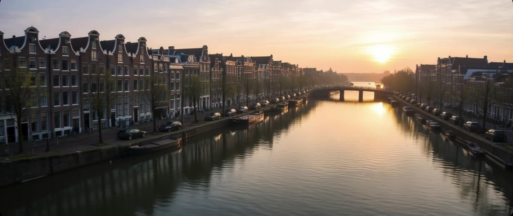

4ocean
4ocean rimuove la plastica da oceani, fiumi e coste con equipaggi di pulizia a tempo pieno, finanziati da prodotti in plastica recuperata.
Creato da SI e Biological SI Partner.
AZIONE POSITIVA, NON PANICO
Diamo spazio a soluzioni concrete: oceani puliti, foreste ripiantate e un’informatica che non prosciuga il pianeta.
Esplora tutte le soluzioniCome aiutare
Scrivi a ideas@savingplanets.com con le tue idee o le soluzioni che vorresti vedere sul nostro sito.
Guarda le soluzioni sulla mappa del mondo
4ocean rimuove la plastica da oceani, fiumi e coste con equipaggi di pulizia a tempo pieno, finanziati da prodotti in plastica recuperata.

Rimuovere vecchie dighe, sostituire i tombini stradali e ripristinare le pianure alluvionali perché i fiumi scorrano e i pesci possano spostarsi.

Pulizie delle spiagge in cui i volontari raccolgono i rifiuti e registrano ciò che trovano.

Ripristino forestale, forestazione urbana e Tree Equity, che punta a portare alberi in ogni quartiere.

Eden: People+Planet ripristina paesaggi insieme alle comunità locali, tra cui un progetto di 394.000 ettari sui Monti Rubeho, in Tanzania (Eden).

Dalla Stazione Spaziale Internazionale, GEDI usa impulsi laser per misurare l’altezza e la struttura 3D delle foreste della Terra (Università del Maryland).
Satelliti, missioni e un’orbita più pulita

Astroscale ispeziona, assiste e rimuove i detriti in orbita: ELSA-d, il ravvicinamento di ADRAS-J a uno stadio superiore di un razzo H-IIA nel 2024 e ADRAS-J2, previsto per l’anno fiscale 2027.

Ad aprile 2026 Artemis II ha portato quattro astronauti intorno alla Luna, a 252.756 miglia dalla Terra: più lontano di quanto si fosse mai spinto un essere umano.

Il radar di DAICHI-4 (JAXA) vede attraverso le nuvole su una fascia larga 200 km e prosegue la serie di dati radar usata per gli allarmi sulla deforestazione.

Soluzione della settimana
Una cortina di bolle attraverso un canale spinge la plastica in superficie e la convoglia in un sistema di raccolta, mentre barche e pesci passano liberamente. Le loro FAQ indicano un tasso di cattura dell’86% per la plastica galleggiante (dato aziendale).
Creato da SI e Biological SI Partner.
Totali aggiornati delle soluzioni presenti sul sito. Tocca un numero per vedere la soluzione che c’è dietro.
Fonte: Life Terra (dato aziendale) A partire dal maggio 2026
Fonte: The Ocean Cleanup (dato aziendale) · Dati a ottobre 2026
Fonte: NASA · Dati ad aprile 2026
Cosa è cambiato di recente sul sito. Iscriviti al Notiziario settimanale per riceverle ogni settimana.
La plastica, le foreste e l'energia sono problemi che possiamo affrontare insieme. Invia un'idea o segnalaci una soluzione che conosci. Se la tua soluzione rispetta i nostri criteri delle soluzioni, saremo felici di pubblicarla sul sito. Se vuoi fare una donazione, visita la nostra pagina Soluzioni e scegli quella più vicina ai tuoi interessi.
Tutti i link per donare e fare volontariato sono raccolti anche qui: Come aiutare